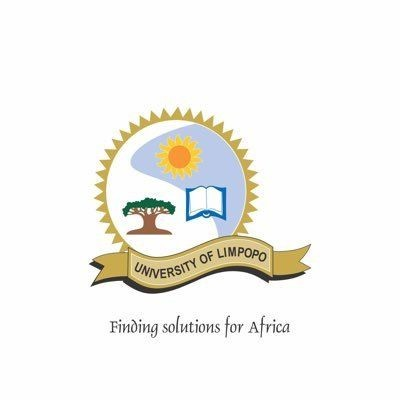
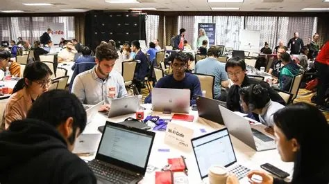

University of Limpopo
Welcome to the official website of the Department of Computer Science. We are glad to have you here.
The Department of Computer Science under SMCS offers quality education in computing and produces skilled IT graduates for South Africa.

Every year, with the partnership of local tech companies and GEEKULCHA, we organize exciting hackathons where students can collaborate, innovate, and build amazing projects.With a focus on creativity and problem-solving, these events provide an excellent opportunity for students to apply their knowledge in a competitive yet supportive environment.Not forgetting that every year there are prizes to be won.